Jeudi 15 juillet
Soirée d’ouverture
Loud
Également en vedette :
Bleu Jeans Bleu
Ariane Roy

Festival des arts,
15 au 18juillet 2027
Centre-ville d’Alma
Jeudi 15 juillet
Soirée d’ouverture
Également en vedette :
Bleu Jeans Bleu
Ariane Roy
Vendredi 16 juillet
Journée famille et découvertes
Également en vedette :
Talk
Sultan + Shepard
Samedi 17 juillet
Grande journée festivalière
Également en vedette :
Les Trois Accords
Sara Dufour
Dimanche 18 juillet
Clôture du festival
Également en vedette :
Salebarbes
Ingrid St-Pierre
Vérification des faits
Le Festival TAG Alma est un travail scolaire. Il s’agit d’un projet étudiant réalisé par des étudiants du Collège d’Alma, confirmé publiquement par ses auteurs dans un communiqué publié sur leur page, le 1er octobre 2026 : lire le communiqué.
Bauhem, agence web d’Alma, a rapidement acheté ce nom de domaine avant qu’il ne serve à vendre quoi que ce soit. Nous laissons cette page en ligne, parce que le montage ressemblait trait pour trait à une vraie fraude, et qu’apprendre à la reconnaître reste utile. Nous continuons de surveiller.
Vérification
« Alma, WV, United States »
Incohérence
Le festival prétend se tenir au centre-ville d’Alma, au Québec. « WV » est l’abréviation de la Virginie-Occidentale, aux États-Unis. Les deux ne peuvent pas être vrais en même temps. Ce genre de détail passe inaperçu quand on lit vite, et c’est précisément ce sur quoi compte ce genre de montage.
Code postal G8B 2B7
Vrai, et c’est le problème
Ce code postal existe vraiment, c’est celui du secteur d’Alma. Il a probablement été copié pour donner un air d’authenticité à l’ensemble. Collé à « WV, United States », il ne prouve rien, il rend seulement la fausse page un peu plus crédible aux yeux de quelqu’un qui cherche une raison d’y croire.
202432403@collegealma.ca
Incohérence
Une suite de neuf chiffres sur l’adresse d’un établissement scolaire. Aucune organisation qui vend des passeports à 499 $ ne communique avec une adresse anonyme hébergée chez quelqu’un d’autre. Une vraie billetterie affiche un nom, un numéro de téléphone et une politique de remboursement.
Aucune existence publique
Signal d’alarme
Pas de communiqué, pas de mention de la Ville d’Alma, pas de couverture dans les médias régionaux, pas de salle partenaire, pas de site de commanditaire. Un festival de quatre jours qui remplit le centre-ville laisse des traces partout. Celui-ci n’en laisse aucune, sauf sur sa propre page.
Aucune édition antérieure
Signal d’alarme
Un événement de cette envergure ne sort pas de nulle part. On devrait pouvoir trouver une première édition, des photos datées, un bilan, des remerciements. Ici, il n’y a rien avant la page qui vend les billets.
Aucun artiste n’a confirmé
Signal d’alarme
Aucun des artistes annoncés n’a publié cette date sur ses propres canaux. C’est la vérification la plus rapide qui existe, trente secondes sur le site ou la page d’un seul des artistes, et elle suffit à faire tomber toute l’histoire.
20 % de rabais, tout de suite
Signal d’alarme
Une promotion et une mention d’offre limitée sur un événement annoncé près d’un an à l’avance, avant même qu’un seul billet soit vendu. L’urgence fabriquée empêche de réfléchir, et elle sert exactement la même fonction que le compte à rebours d’une fausse boutique.
Aucune billetterie identifiable
Signal d’alarme
Aucun partenariat avec une billetterie reconnue, aucun numéro de téléphone, aucune adresse physique, aucune politique de remboursement, aucune mention des conditions. L’argent doit partir quelque part, mais rien n’indique où.
Page neuve, aucune évaluation
Signal d’alarme
Une page qui promeut un festival de quatre jours, sans historique, sans commentaires, sans publications anciennes, sans aucune interaction humaine visible. Un événement réel génère du bruit. Un événement inventé génère du vide.
Quatre têtes d’affiche, la même fin de semaine, à Alma
Jugement, et il compte
Loud, Roxane Bruneau, Charlotte Cardin et Daniel Bélanger sont quatre pointures. Quatre têtes d’affiche de calibre aréna, réunies sur quatre soirs consécutifs dans une ville de 30 000 habitants, ce n’est pas impossible, c’est extrêmement rare.
Les portraits des artistes
Images non authentiques
Les portraits de l’affiche ne sont pas de vraies photos des artistes annoncés. Ça se voit. Les visages ne collent pas, les images sont génériques, reprises ailleurs, recadrées et teintées aux couleurs de chaque soirée. Aucune ne vient d’une équipe d’artiste, aucune n’est créditée.
Un vrai festival publie les visuels fournis et approuvés par les artistes. Ici, il fallait deux secondes pour voir que ce n’était pas eux.
Même s’il s’agit d’étudiants, la mécanique reste celle d’une fraude, et elle n’a rien d’improvisé. C’est une méthode répétée, documentée, qui fonctionne parce qu’elle imite très bien ce qui existe déjà.
Les dangers, eux, sont bien réels. Nous avons tous été fraudés un jour, ou nous sommes passés tout près. À une époque où l’intelligence artificielle et la réalité se confondent, mieux vaut être vigilant.
Mécanique
Un nom plausible, une identité visuelle professionnelle, une programmation qui tient debout et des visuels soignés. Le résultat n’a plus l’air d’une arnaque amateur. Il a l’air d’un festival.
Les autorités canadiennes le disent maintenant explicitement : les fraudeurs peuvent utiliser l’intelligence artificielle pour produire des textes, des images et des sites très convaincants, à très faible coût.
Une page, quelques publications, quelques visuels. Cela suffit à donner l’impression que l’événement existe depuis un moment et qu’une organisation travaille derrière.
Dans notre cas, le 30 septembre 2026, une page intitulée Festival TAG Alma annonçait un festival du 15 au 18 juillet 2027 au centre-ville d’Alma, et proposait déjà des passeports jusqu’à 499 $. Les auteurs ont confirmé plus tard qu’il s’agissait d’un travail scolaire, mais la page, elle, avait tout d’une vraie.
Des logos, des partenaires, des artistes connus, de la foule en contre-jour, des commentaires enthousiastes, un compte à rebours. Chaque élément ajouté réduit le nombre de personnes qui vont vérifier.
Rien de tout cela n’a besoin d’être vrai. Tout a seulement besoin d’être beau.
Puis arrive le lien d’achat. Le paiement part par carte sur une page qui ressemble à une billetterie, ou par virement vers une personne, ou par messagerie avec un agent très serviable.
Après le paiement, la victime reçoit un faux billet, un code inutilisable, une confirmation qui ne vaut rien, ou simplement plus aucune réponse. Plusieurs personnes ne découvrent la fraude qu’en arrivant devant la porte, avec un billet invalide.
Cas documentés
MichiganMars 2026
La procureure générale du Michigan a averti le public au sujet de fausses pages Facebook imitant des foires et festivals populaires. Les fraudeurs reprenaient les vraies photos et les vraies identités visuelles des événements, puis demandaient aux exposants de réserver leur emplacement et de payer pour un kiosque qui n’existait pas.
Lire l’avertissement du bureau de la procureure générale du Michigan
CanadaMai 2026
Le Bureau de la concurrence a publié un avertissement national sur les faux vendeurs de billets. Le mécanisme décrit est exactement celui de cette affaire : des sites web, des logos et des publicités commanditées qui imitent les sources officielles pour gagner la confiance avant de prendre l’argent.
Alma2026
Le Festival TAG Alma 2027. Une affiche crédible, quatre pointures, des passeports à 499 $, une page sans historique, et rien derrière. C’était un travail scolaire, et c’était réussi. Trop réussi.
On en rit aujourd’hui. On ne recommence pas demain. Et nous continuons de regarder.
PartoutEn continu
Les annonces en ligne, les faux sites et les réseaux sociaux servent couramment à vendre des billets faux, invalides ou revendus plusieurs fois. Certains montages tiennent des semaines, encaissent, puis la page disparaît ou change de nom. Les opérateurs refont ensuite exactement la même chose avec un autre festival, en réutilisant le site, la billetterie et les publicités.
Consulter les fraudes récentes signalées au Centre antifraude du Canada
Avant d’acheter un billet
Ces cinq gestes prennent moins de cinq minutes. Ils écartent la quasi totalité des fraudes du genre.